V1 V2 V3 V4 V5 V6 V7 V8 V9 V10 V11 V12 V13 V14 V15 V16 V17 V18
1 A11 6 A34 A43 1169 A65 A75 4 A93 A101 4 A121 67 A143 A152 2 A173 1
2 A12 48 A32 A43 5951 A61 A73 2 A92 A101 2 A121 22 A143 A152 1 A173 1
3 A14 12 A34 A46 2096 A61 A74 2 A93 A101 3 A121 49 A143 A152 1 A172 2
4 A11 42 A32 A42 7882 A61 A74 2 A93 A103 4 A122 45 A143 A153 1 A173 2
5 A11 24 A33 A40 4870 A61 A73 3 A93 A101 4 A124 53 A143 A153 2 A173 2
6 A14 36 A32 A46 9055 A65 A73 2 A93 A101 4 A124 35 A143 A153 1 A172 2
V19 V20 V21
1 A192 A201 1
2 A191 A201 2
3 A191 A201 1
4 A191 A201 1
5 A191 A201 2
6 A192 A201 1Solución Taller 1: Preprocesamiento y visualización de datos UNIVERSIDAD DEL VALLE – FACULTAD DE INGENIERIA Machine Leraning para Gestión Financiera
Profesor: Ivan Mauricio Bermúdez Vera
Introducir…
0. Carga del conjunto de datos
El conjunto de datos German Credit presenta información sobre 1000 solicitantes de crédito. Cada variable en el conjunto permite una aproximación a las características financieras y socioeconómicas del potencial cliente a su vez que permite construir un análisis de estas variables con respecto a su comportamiento crediticio.
Como se logra evidenciar en la escrtura anterior, hay registros que están codificados, además de que no se tienen el nombre de las columnas. En la siguiente sección, se realizará la limpieza y el preprocesamiento de los datos.
1. Diagnóstico de calidad de datos
Se inicia verificando la estructura general de los datos, en los que se presentan 1000 observaciones y 20 variables. A continuación se presentan los tipos de variables donde se identifican 13 variables tipo caracter y 7 variables numéricas:
'data.frame': 1000 obs. of 21 variables:
$ checking_status : chr "A11" "A12" "A14" "A11" ...
$ duration : int 6 48 12 42 24 36 24 36 12 30 ...
$ credit_history : chr "A34" "A32" "A34" "A32" ...
$ purpose : chr "A43" "A43" "A46" "A42" ...
$ credit_amount : int 1169 5951 2096 7882 4870 9055 2835 6948 3059 5234 ...
$ savings : chr "A65" "A61" "A61" "A61" ...
$ employment : chr "A75" "A73" "A74" "A74" ...
$ installment_rate : int 4 2 2 2 3 2 3 2 2 4 ...
$ personal_status_sex : chr "A93" "A92" "A93" "A93" ...
$ other_debtors : chr "A101" "A101" "A101" "A103" ...
$ residence_since : int 4 2 3 4 4 4 4 2 4 2 ...
$ property : chr "A121" "A121" "A121" "A122" ...
$ age : int 67 22 49 45 53 35 53 35 61 28 ...
$ other_installment_plans: chr "A143" "A143" "A143" "A143" ...
$ housing : chr "A152" "A152" "A152" "A153" ...
$ existing_credits : int 2 1 1 1 2 1 1 1 1 2 ...
$ job : chr "A173" "A173" "A172" "A173" ...
$ people_liable : int 1 1 2 2 2 2 1 1 1 1 ...
$ telephone : chr "A192" "A191" "A191" "A191" ...
$ foreign_worker : chr "A201" "A201" "A201" "A201" ...
$ default : int 1 2 1 1 2 1 1 1 1 2 ...Se procede a convertir las variables categóricas a sus respectivas equivalencias denotadas en los atributos compartidos, a su vez que se convierte a formato factor:
Rows: 1,000
Columns: 21
$ checking_status <fct> less_0, 0_200, no_account, less_0, less_0, no_…
$ duration <int> 6, 48, 12, 42, 24, 36, 24, 36, 12, 30, 12, 48,…
$ credit_history <fct> critical_other, existing_paid, critical_other,…
$ purpose <fct> radio_tv, radio_tv, education, furniture_equip…
$ credit_amount <int> 1169, 5951, 2096, 7882, 4870, 9055, 2835, 6948…
$ savings <fct> unknown, less_100, less_100, less_100, less_10…
$ employment <fct> greater_7, 1_4, 4_7, 4_7, 1_4, 1_4, greater_7,…
$ installment_rate <int> 4, 2, 2, 2, 3, 2, 3, 2, 2, 4, 3, 3, 1, 4, 2, 4…
$ personal_status_sex <fct> male_single, female_divorced_separated_married…
$ other_debtors <fct> none, none, none, guarantor, none, none, none,…
$ residence_since <int> 4, 2, 3, 4, 4, 4, 4, 2, 4, 2, 1, 4, 1, 4, 4, 2…
$ property <fct> real_estate, real_estate, real_estate, buildin…
$ age <int> 67, 22, 49, 45, 53, 35, 53, 35, 61, 28, 25, 24…
$ other_installment_plans <fct> none, none, none, none, none, none, none, none…
$ housing <fct> own, own, own, for_free, for_free, for_free, o…
$ existing_credits <int> 2, 1, 1, 1, 2, 1, 1, 1, 1, 2, 1, 1, 1, 2, 1, 1…
$ job <fct> skilled_official, skilled_official, unskilled_…
$ people_liable <int> 1, 1, 2, 2, 2, 2, 1, 1, 1, 1, 1, 1, 1, 1, 1, 1…
$ telephone <fct> yes, none, none, none, none, yes, none, yes, n…
$ foreign_worker <fct> yes, yes, yes, yes, yes, yes, yes, yes, yes, y…
$ default <fct> good, bad, good, good, bad, good, good, good, …Ahora, una vez realizada la recodificación, se realiza un resumen estadístico de las variables a analizar.
| checking_status | duration | credit_history | purpose | credit_amount | savings | employment | installment_rate | personal_status_sex | other_debtors | residence_since | property | age | other_installment_plans | housing | existing_credits | job | people_liable | telephone | foreign_worker | default | |
|---|---|---|---|---|---|---|---|---|---|---|---|---|---|---|---|---|---|---|---|---|---|
| 0_200 :269 | Min. : 4.0 | all_paid : 49 | radio_tv :280 | Min. : 250 | 100_500 :103 | 1_4 :339 | Min. :1.000 | female_divorced_separated_married:310 | co_applicant: 41 | Min. :1.000 | building_society_savings_life_insurance:232 | Min. :19.00 | bank :139 | for_free:108 | Min. :1.000 | management_self_employed_highly_qualified:148 | Min. :1.000 | none:596 | no : 37 | bad :300 | |
| greater_200: 63 | 1st Qu.:12.0 | critical_other :293 | car_new :234 | 1st Qu.: 1366 | 500_1000 : 63 | 4_7 :174 | 1st Qu.:2.000 | male_divorced_separated : 50 | guarantor : 52 | 1st Qu.:2.000 | car_or_other :332 | 1st Qu.:27.00 | none :814 | own :713 | 1st Qu.:1.000 | skilled_official :630 | 1st Qu.:1.000 | yes :404 | yes:963 | good:700 | |
| less_0 :274 | Median :18.0 | delay : 88 | furniture_equipment:181 | Median : 2320 | greater_1000: 48 | greater_7 :253 | Median :3.000 | male_married : 92 | none :907 | Median :3.000 | real_estate :282 | Median :33.00 | stores: 47 | rent :179 | Median :1.000 | unemployed_unskilled : 22 | Median :1.000 | NA | NA | NA | |
| no_account :394 | Mean :20.9 | existing_paid :530 | car_used :103 | Mean : 3271 | less_100 :603 | less_1 :172 | Mean :2.973 | male_single :548 | NA | Mean :2.845 | unknown_no_property :154 | Mean :35.55 | NA | NA | Mean :1.407 | unskilled_resident :200 | Mean :1.155 | NA | NA | NA | |
| NA | 3rd Qu.:24.0 | no_credit_all_paid: 40 | business : 97 | 3rd Qu.: 3972 | unknown :183 | unemployed: 62 | 3rd Qu.:4.000 | NA | NA | 3rd Qu.:4.000 | NA | 3rd Qu.:42.00 | NA | NA | 3rd Qu.:2.000 | NA | 3rd Qu.:1.000 | NA | NA | NA | |
| NA | Max. :72.0 | NA | education : 50 | Max. :18424 | NA | NA | Max. :4.000 | NA | NA | Max. :4.000 | NA | Max. :75.00 | NA | NA | Max. :4.000 | NA | Max. :2.000 | NA | NA | NA | |
| NA | NA | NA | (Other) : 55 | NA | NA | NA | NA | NA | NA | NA | NA | NA | NA | NA | NA | NA | NA | NA | NA | NA |
analizar…
Una vez realizado el resumen estadístico, se procede a verificar si los datos numéricos y categóricos cumplen con sus características de validación que se describen a continuación:
Object of class 'validator' with 21 elements:
V01: german[["duration"]] > 0
V02: german[["credit_amount"]] > 0
V03: german[["installment_rate"]] > 0
V04: german[["residence_since"]] > 0
V05: german[["age"]] > 0
V06: german[["existing_credits"]] >= 0
V07: german[["people_liable"]] >= 0
V08: checking_status %in% unname(dict_mapping[["checking_status"]])
V09: credit_history %in% unname(dict_mapping[["credit_history"]])
V10: purpose %in% unname(dict_mapping[["purpose"]])
V11: savings %in% unname(dict_mapping[["savings"]])
V12: employment %in% unname(dict_mapping[["employment"]])
V13: personal_status_sex %in% unname(dict_mapping[["personal_status_sex"]])
V14: other_debtors %in% unname(dict_mapping[["other_debtors"]])
V15: property %in% unname(dict_mapping[["property"]])
V16: other_installment_plans %in% unname(dict_mapping[["other_installment_plans"]])
V17: housing %in% unname(dict_mapping[["housing"]])
V18: job %in% unname(dict_mapping[["job"]])
V19: telephone %in% unname(dict_mapping[["telephone"]])
V20: foreign_worker %in% unname(dict_mapping[["foreign_worker"]])
V21: default %in% unname(dict_mapping[["default"]])Se definen cuántas filas presentan al menos una regla incumplida y se encuentra que el número es cero.
integer(0)A su vez, se encuentra que el número de datos faltantes en toda la base es igualmente cero.
sum(is.na(german))[1] 0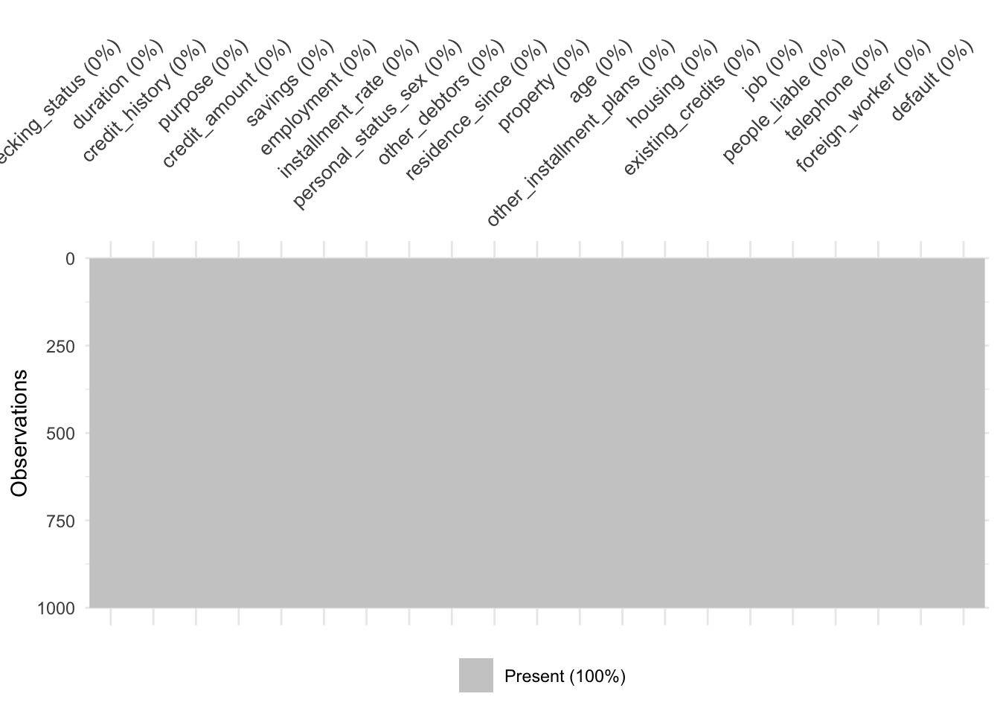
Una vez se revisan los datos faltantes, se procede a realizar un análisis de anomalías. Para ello, usamos el criterio Tukey:
| Variable | Q1 | Q3 | IQR | Limite_Inferior | Limite_Superior | Atipicos | Porcentaje |
|---|---|---|---|---|---|---|---|
| duration | 12.0 | 24.00 | 12.00 | -6.00 | 42.00 | 70 | 7.0 |
| credit_amount | 1365.5 | 3972.25 | 2606.75 | -2544.62 | 7882.38 | 72 | 7.2 |
| installment_rate | 2.0 | 4.00 | 2.00 | -1.00 | 7.00 | 0 | 0.0 |
| residence_since | 2.0 | 4.00 | 2.00 | -1.00 | 7.00 | 0 | 0.0 |
| age | 27.0 | 42.00 | 15.00 | 4.50 | 64.50 | 23 | 2.3 |
| existing_credits | 1.0 | 2.00 | 1.00 | -0.50 | 3.50 | 6 | 0.6 |
| people_liable | 1.0 | 1.00 | 0.00 | 1.00 | 1.00 | 155 | 15.5 |
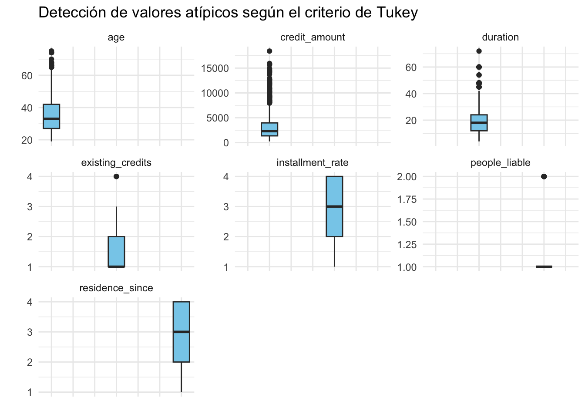
# A tibble: 326 × 3
Variable Fila Valor
<chr> <int> <int>
1 duration 2 48
2 duration 12 48
3 duration 30 60
4 duration 36 45
5 duration 37 48
6 duration 45 48
7 duration 64 48
8 duration 79 54
9 duration 96 54
10 duration 116 48
# ℹ 316 more rowsCon base en los boxplots y el criterio Tukey… Sin embargo, a continuación se realiza los diagramas de dispersión de las variables numéricas y un análisis multivariado para evidenciar si hay algunas anomalías que son influyentes a nivel multivariable.
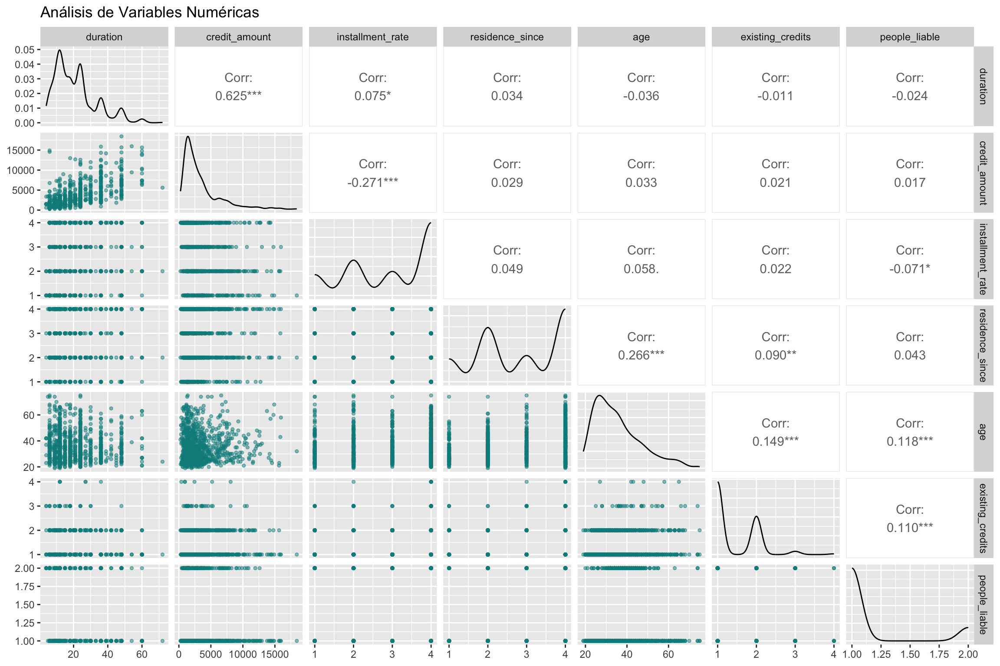
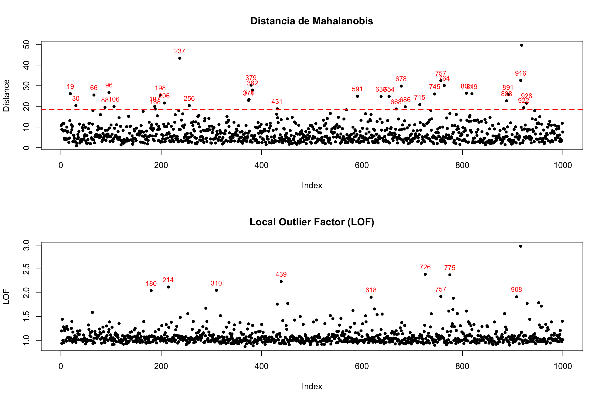
| n_out_mahalanobis | n_out_lof |
|---|---|
| 35 | 10 |
Analizar y decir que, a pesar de que los métodos dicen que hay ciertas anomalías en los datos, estos no parecen ser errores, y en los scatterplots no se evidencian inconsistencias.
2. Análisis exploratorio
Distribución de la variable objetivo (default)
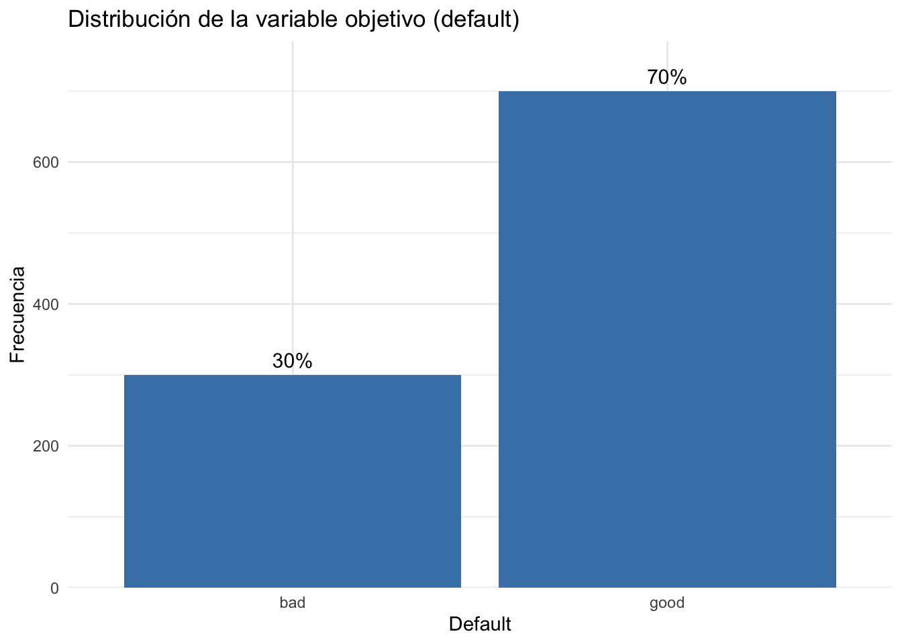
Análisis descriptivo de variables cuantitativas
Se presenta inicialmente los estadísticos descriptivos de las variables numéricas:
| Media | Mediana | Desv_Est | Minimo | Maximo | |
|---|---|---|---|---|---|
| duration | 20.90 | 18.0 | 12.06 | 4 | 72 |
| credit_amount | 3271.26 | 2319.5 | 2822.74 | 250 | 18424 |
| installment_rate | 2.97 | 3.0 | 1.12 | 1 | 4 |
| residence_since | 2.85 | 3.0 | 1.10 | 1 | 4 |
| age | 35.55 | 33.0 | 11.38 | 19 | 75 |
| existing_credits | 1.41 | 1.0 | 0.58 | 1 | 4 |
| people_liable | 1.16 | 1.0 | 0.36 | 1 | 2 |
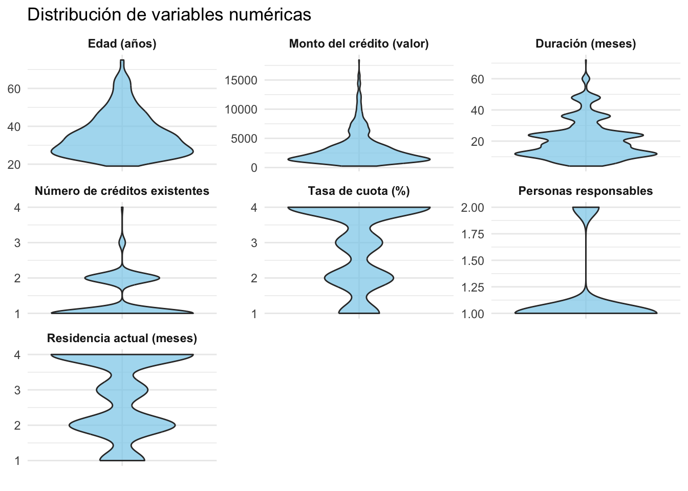
Análisis descriptivo de variables categóricas
| Variable | Categorias | Moda | Frecuencia_moda |
|---|---|---|---|
| checking_status | 4 | no_account | 394 |
| credit_history | 5 | existing_paid | 530 |
| purpose | 10 | radio_tv | 280 |
| savings | 5 | less_100 | 603 |
| employment | 5 | 1_4 | 339 |
| personal_status_sex | 4 | male_single | 548 |
| other_debtors | 3 | none | 907 |
| property | 4 | car_or_other | 332 |
| other_installment_plans | 3 | none | 814 |
| housing | 3 | own | 713 |
| job | 4 | skilled_official | 630 |
| telephone | 2 | none | 596 |
| foreign_worker | 2 | yes | 963 |
| default | 2 | good | 700 |
| Variable | Categoria | n | Porcentaje |
|---|---|---|---|
| checking_status | 0_200 | 269 | 26.9 |
| checking_status | greater_200 | 63 | 6.3 |
| checking_status | less_0 | 274 | 27.4 |
| checking_status | no_account | 394 | 39.4 |
| credit_history | all_paid | 49 | 4.9 |
| credit_history | critical_other | 293 | 29.3 |
| credit_history | delay | 88 | 8.8 |
| credit_history | existing_paid | 530 | 53.0 |
| credit_history | no_credit_all_paid | 40 | 4.0 |
| default | bad | 300 | 30.0 |
| default | good | 700 | 70.0 |
| employment | 1_4 | 339 | 33.9 |
| employment | 4_7 | 174 | 17.4 |
| employment | greater_7 | 253 | 25.3 |
| employment | less_1 | 172 | 17.2 |
| employment | unemployed | 62 | 6.2 |
| foreign_worker | yes | 963 | 96.3 |
| foreign_worker | no | 37 | 3.7 |
| housing | for_free | 108 | 10.8 |
| housing | own | 713 | 71.3 |
| housing | rent | 179 | 17.9 |
| job | management_self_employed_highly_qualified | 148 | 14.8 |
| job | skilled_official | 630 | 63.0 |
| job | unemployed_unskilled | 22 | 2.2 |
| job | unskilled_resident | 200 | 20.0 |
| other_debtors | co_applicant | 41 | 4.1 |
| other_debtors | guarantor | 52 | 5.2 |
| other_debtors | none | 907 | 90.7 |
| other_installment_plans | none | 814 | 81.4 |
| other_installment_plans | bank | 139 | 13.9 |
| other_installment_plans | stores | 47 | 4.7 |
| personal_status_sex | female_divorced_separated_married | 310 | 31.0 |
| personal_status_sex | male_divorced_separated | 50 | 5.0 |
| personal_status_sex | male_married | 92 | 9.2 |
| personal_status_sex | male_single | 548 | 54.8 |
| property | building_society_savings_life_insurance | 232 | 23.2 |
| property | car_or_other | 332 | 33.2 |
| property | real_estate | 282 | 28.2 |
| property | unknown_no_property | 154 | 15.4 |
| purpose | business | 97 | 9.7 |
| purpose | car_new | 234 | 23.4 |
| purpose | car_used | 103 | 10.3 |
| purpose | domestic_appliances | 12 | 1.2 |
| purpose | education | 50 | 5.0 |
| purpose | furniture_equipment | 181 | 18.1 |
| purpose | others | 12 | 1.2 |
| purpose | radio_tv | 280 | 28.0 |
| purpose | repairs | 22 | 2.2 |
| purpose | retraining | 9 | 0.9 |
| savings | 100_500 | 103 | 10.3 |
| savings | 500_1000 | 63 | 6.3 |
| savings | greater_1000 | 48 | 4.8 |
| savings | less_100 | 603 | 60.3 |
| savings | unknown | 183 | 18.3 |
| telephone | none | 596 | 59.6 |
| telephone | yes | 404 | 40.4 |
A continuación se presentan las gráficas de barras para las variables categóricas asociadas a aspectos financieros del crédito:
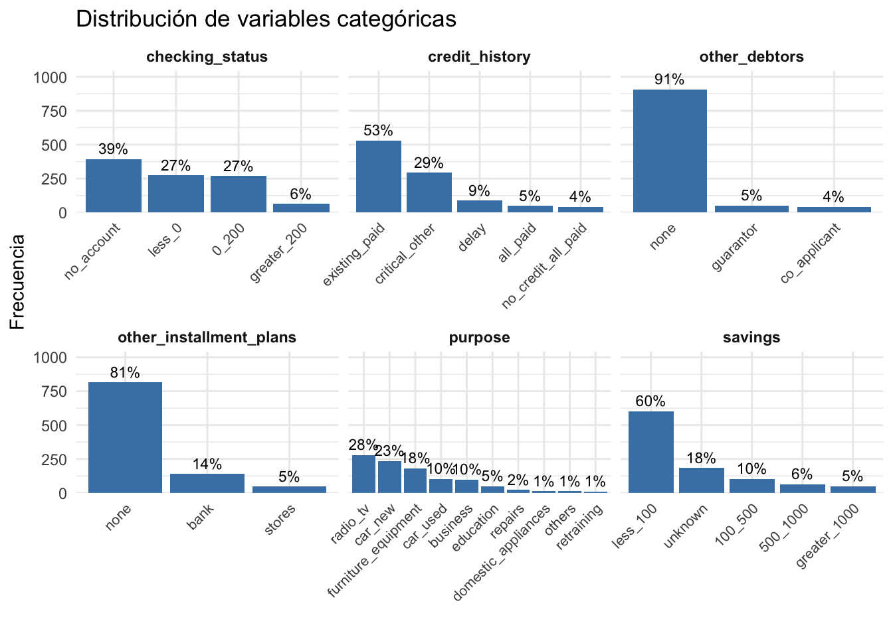
Igualmente, se grafican las variables socioeconómicas de los solicitantes, lo cual también contribuye a la construcción de un perfil de riesgo:
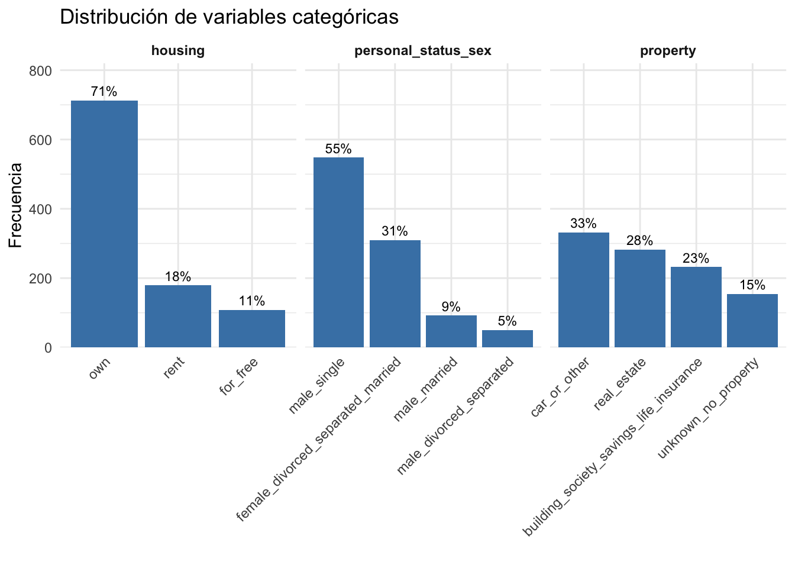
Finalmente se establecen las características asociadas al entorno laboral como una característica relevante del individuo ya que permitiría ser un medio de solvencia para respaldar al crédito:
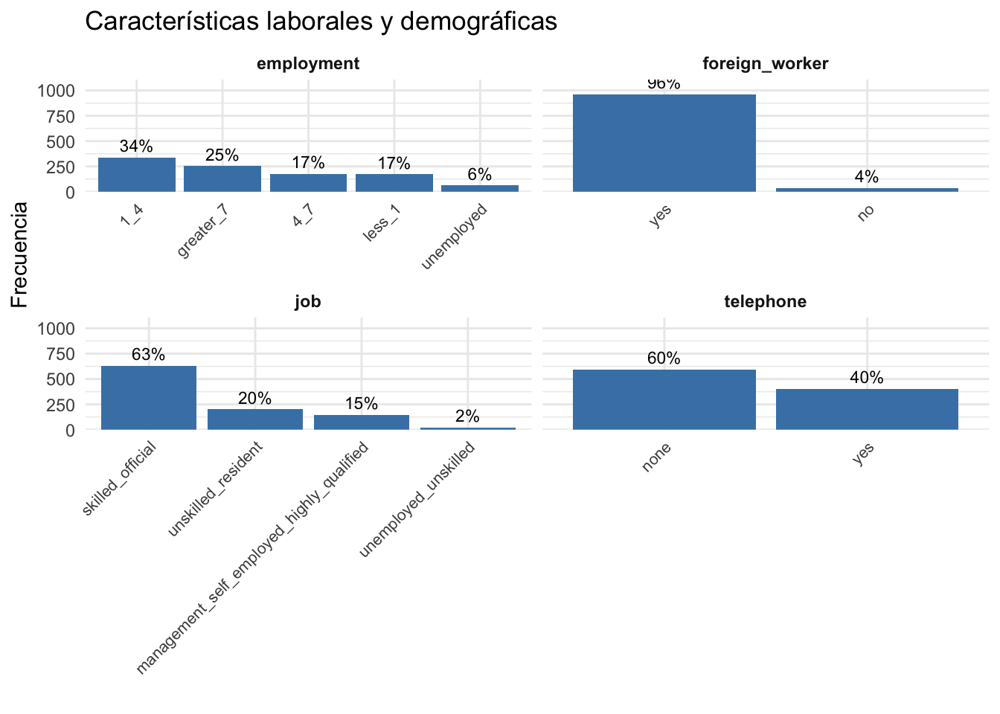
Análisis bivariado y relación con variable target
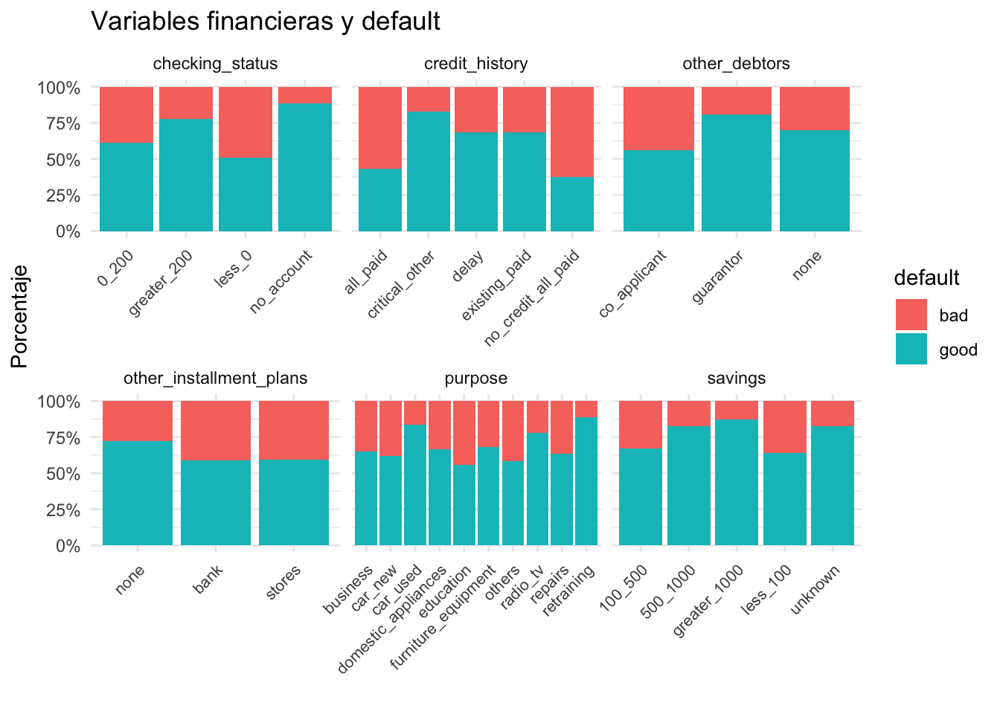
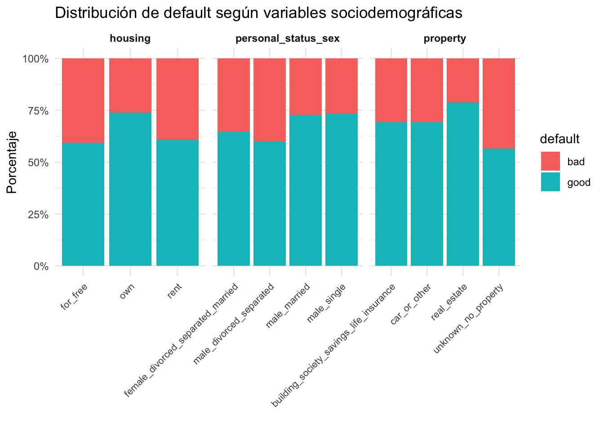
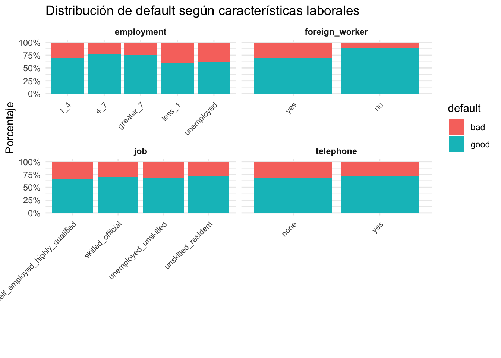
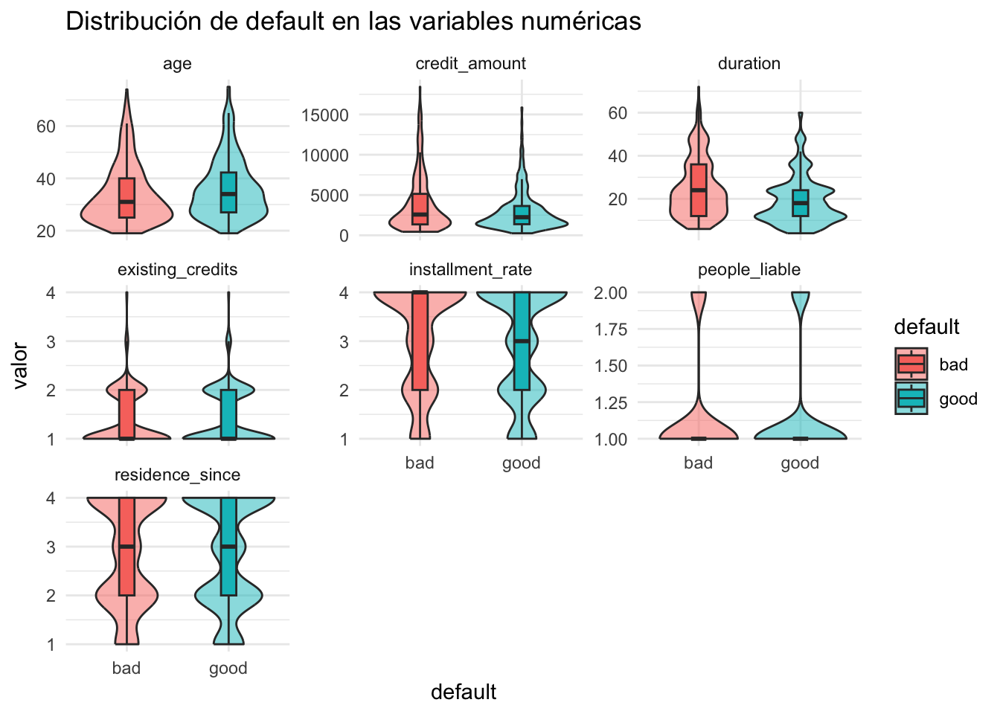
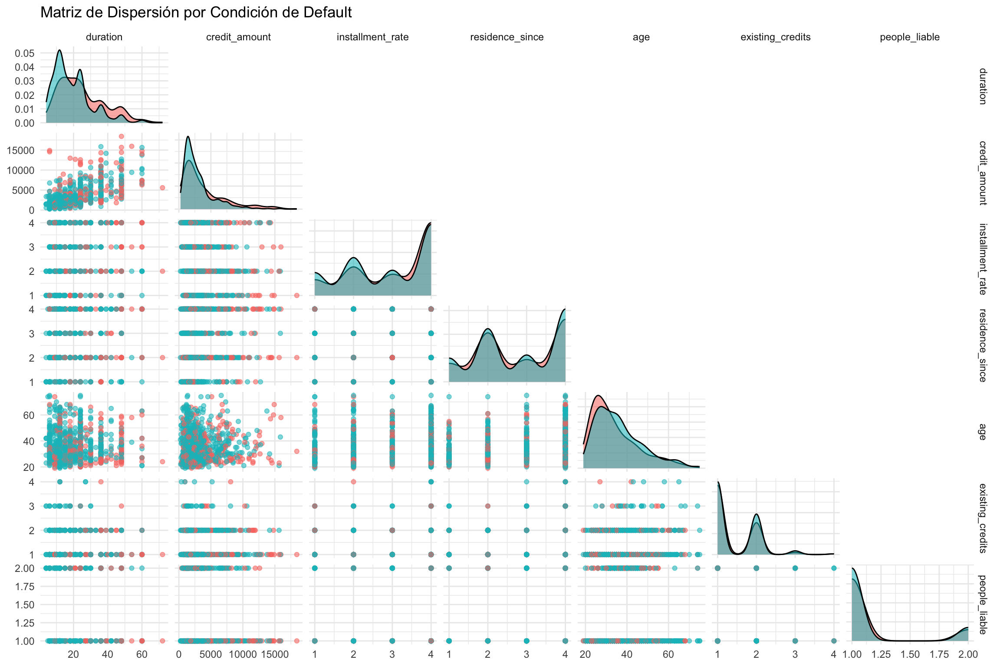
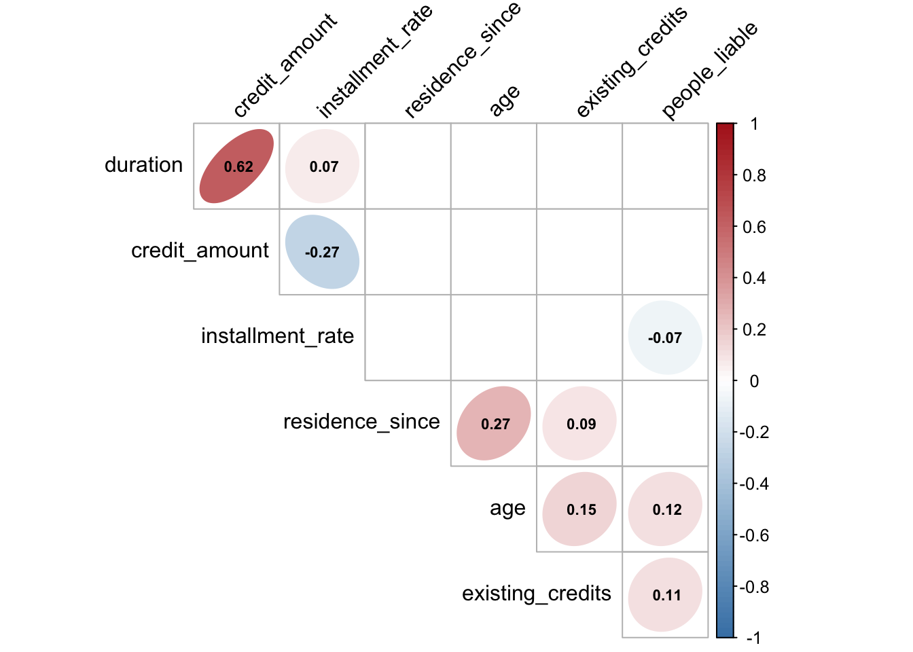
Anlizar…
3. Preprocesamiento de datos
Con base en el análisis exploratorio, se presenta una alta cardinalidad en las variable purpose. Para este caso, se agruparán sus categorías por su naturaleza de la siguiente manera:
Vehículos:
car_new, car_usedHogar:
radio_tv, furniture_equipment, domestic_appliances, repairsInversión/Desarrollo:
business, education, retrainingOtros:
others
A continuación, se presenta las agrupaciones y sus respectivos resultados:
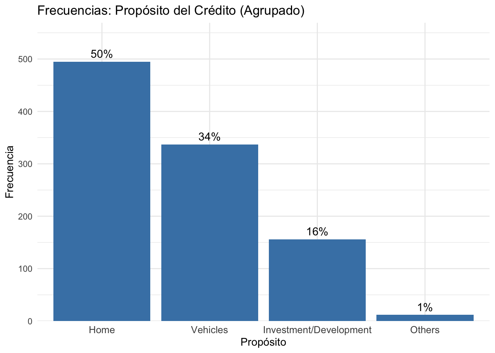
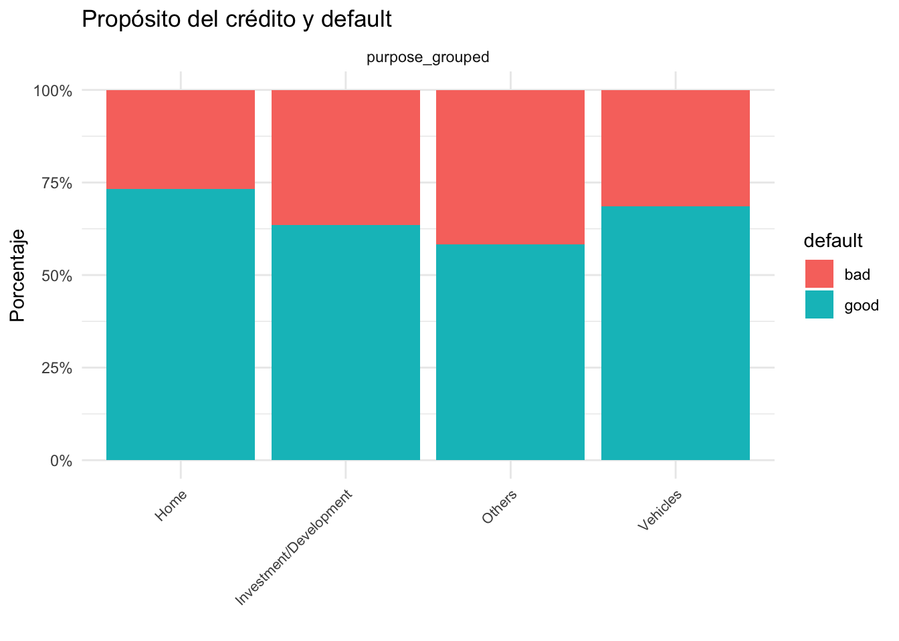